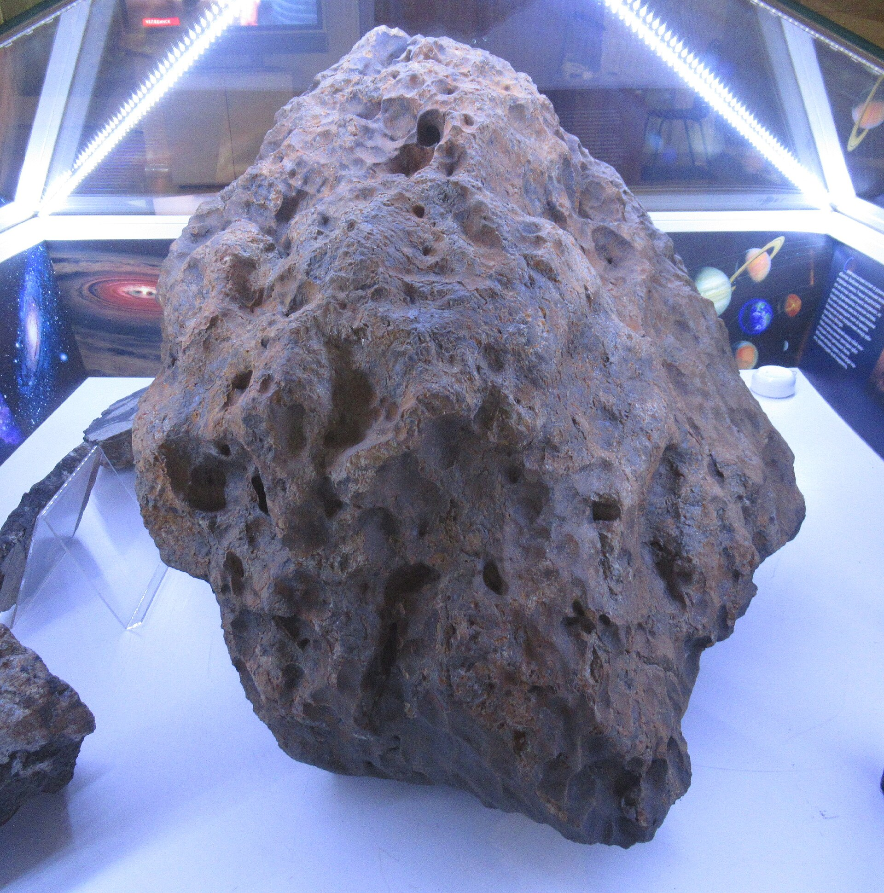
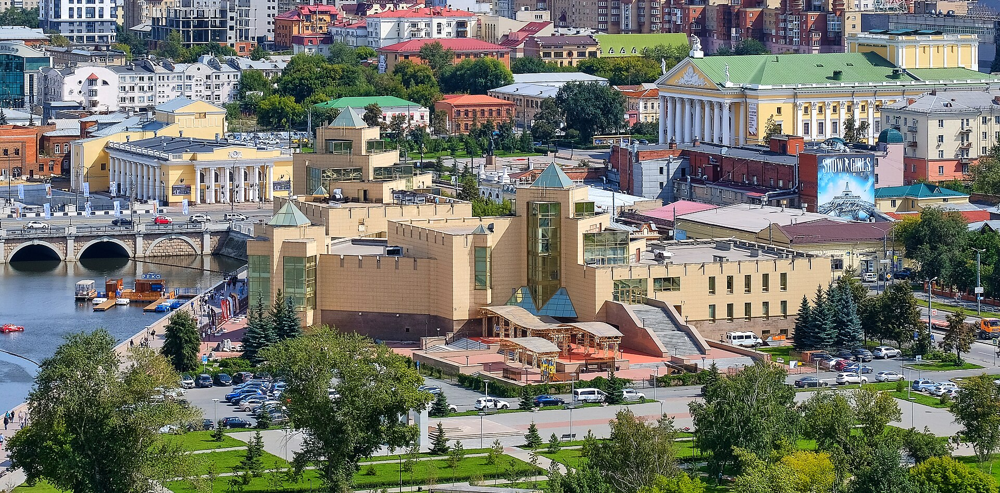
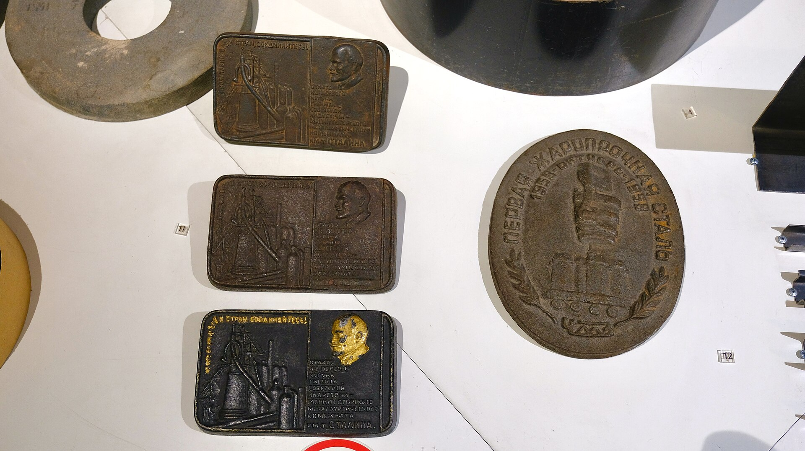
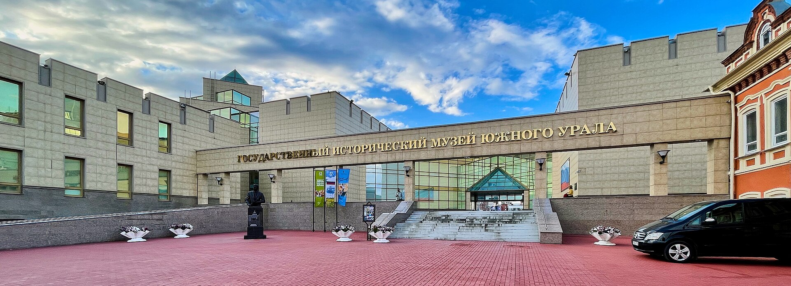
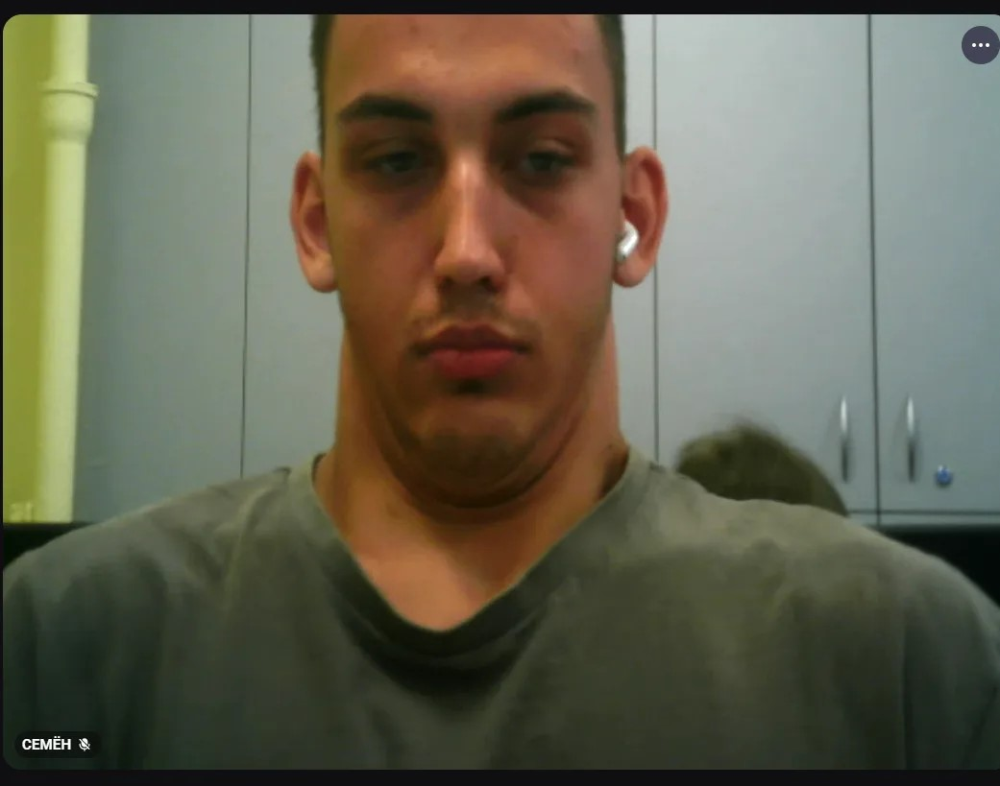

Адрес и режим
г. Челябинск, ул. Труда, 100
Ежедневно с 10:00 до 20:00.
Продажа билетов заканчивается в 19:15.
Последний понедельник месяца — технический день.
Челябинск · ул. Труда, 100 · три зала постоянной экспозиции
Государственный исторический музей Южного Урала хранит более 300 тысяч предметов — от гигантского фрагмента челябинского метеорита до купеческой пролётки. Пройдите маршрут по трём залам, загляните в коллекцию и проверьте себя в квизе.

Фотоальбом
Здание-крепость на набережной Миасса, светлые залы и подлинные предметы экспозиции — несколько кадров, чтобы узнать музей ещё до визита.





Листайте фотографии вбок — на телефоне галерея тоже свайпается.
Что внутри
Сайт устроен как короткая экскурсия: сначала общий маршрут, потом детали — залы, предметы, история города и музея, а в конце небольшой квиз.
Кто создал музей, как он переехал в здание-крепость на набережной и чем живёт сегодня.
Открыть ↗ 02Интерактивная схема трёх залов: выберите остановку и узнайте, что смотреть в первую очередь.
Пройти ↗ 03Ключевые экспозиции: метеорит, минералы, макет крепости, доменная печь и городская улица.
Смотреть ↗ 04Таймлайн от первых музейных идей 1913 года до креативного пространства «Атом».
Листать ↗ 05Десять вопросов об экспозиции — узнайте, насколько хорошо вы готовы к реальной экскурсии.
Пройти тест ↗ 06Адрес, режим работы, цены на билеты и контакты — всё, что нужно спланировать визит.
Узнать ↗
Маршрут
Постоянная экспозиция размещена в Восточной и Западной башнях музея. Наш маршрут связывает их в одну логичную прогулку — от природы и древней истории через народный быт к городу XX века.
Планирование визита
Данные приведены по официальному сайту музея. Актуальное расписание и цены перед поездкой проверьте на chelmuseum.ru.
г. Челябинск, ул. Труда, 100
Ежедневно с 10:00 до 20:00.
Продажа билетов заканчивается в 19:15.
Последний понедельник месяца — технический день.
Телефон: +7 (351) 225-03-80
Почта: mail@chelmuseum.ru
Возрастное ограничение экспозиции: 6+.
Доступна «Пушкинская карта».
| Взрослый | 500 ₽ |
|---|---|
| Детский | 300 ₽ |
| Льготный | 200 ₽ |
| Семейный (2+1) | 800 ₽ |
Пройдите виртуальную экскурсию заранее и решите, каким залам уделить больше времени при реальном визите.
Авторство
Учебный проект выполнен командой из трёх участников. Участники 1 и 3 вместе отвечают за разработку и вёрстку, участник 2 — за дизайн, графику и контент.
Абдуллаев Темурбек Сайибжонович
Ионин Николай Максимович

Александровский Семён Дмитриевич
Открытое авторство
Факты о музее и экспозиции подготовлены по официальным материалам. Полный список с лицензиями — в файле ИСТОЧНИКИ.md в архиве работы.
История музея, описание залов, режим работы, билеты и контакты.
Названия залов, содержание экспозиции, вес метеорита, стоимость билетов.
Wikimedia Commons: Lumaca, Vyacheslav Bukharov, Alexander Sapozhnikov, Ural-66, IlyaZero, Angidgid, Vsatinet, Лапоть — лицензии CC0 и CC BY-SA.
Тексты сайта — авторская подготовка по указанным источникам; схема залов и иконки нарисованы для проекта. Музыкальные и видеофрагменты на сайте не используются. Перед поездкой проверяйте актуальные расписание и цены на официальном сайте музея.